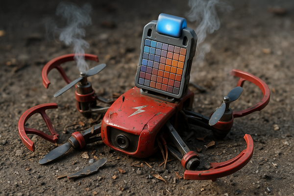

import sys
!{sys.executable} -m pip install djitellopyCrash the Tello (with and without code)
2025-04-24
TL;DR
- Unboxed and crashed a DJI Tello drone — first due to a buggy phone app, then because of the infamous “ceiling effect.”
- Recommend using TelloFPV app and GameSir T1d controller for smoother manual flight experiences.
- Explained basic drone movements clearly (throttle, yaw, pitch, roll).
- Introduced DJI’s Python SDK for coding drone flight, setting the stage for further explorations with code.
Series: Code, Fly & AI
Unboxed
Now that the drone is out of the box, we’re gonna take it for a spin (and yes it crashed). First with the phone app, then with code.

Note
These blog posts are intended to be read in order. If you want to follow along on my journey, start here: Enter the Tello. Or ignore this and keep on reading below.
First TT flight
To fly a drone for the first time it is good to have a basic understanding how these quadcopters work, and what the basic movements are:
| Movement | Description |
|---|---|
| throttle | increases or decreases the height of the drone by adjusting all propellers equally |
| yaw | turns the drone clockwise or counterclockwise by varying propeller speeds |
| pitch | moves the drone forward or backward by changing speeds between front and back propellers |
| roll | moves the drone left or right by varying left and right propeller speeds |
This video explains very clearly how it works:
The Tello doesn’t come with a controller, we fly it through the Tello app. I used the Tello app for iPhone. This app hasn’t been updated for a long time and unfortunately it is useless as it crashes all the time. When the app crashes the drone keeps on hovering in the air, so this first crash is just a software crash.
Tip
If you want to fly the TT or Tello manually I recommend you get the TelloFPV. It’s not free, but doesn’t crash either.
Tip
To really enjoy flying the TT manually you can get a controller that is customized for the Tello: the GameSir T1d. I got one, and it works straight out of the box — even with the TelloFPV app.
Beware of the ceiling effect
While flying the drone around a bit in my office, I went up a bit too high and the drone crashed when it came near the ceiling. This phenomenon even has a name and is called the “ceiling effect.” Basically, the drone gets sucked up to the ceiling because there is not enough air to push down through the propellers.
Alright, now for the real fun — controlling the drone with code.
The Tello Python SDK
DJI provides an SDK for the Tello drone that can be used with Python. The SDK can be used to control the drone through its API. The API is fairly basic but supports:
- Flight control with takeoff, landing and movement commands
- Flight status information (battery level, height, acceleration, speed)
- Stream camera feed
The Python library we will be using for this SDK is DJITelloPy.
A couple of useful resources:
- SDK 3.0 user guide (includes the API spec).
- RoboMaster Developer Guide (also for RoboMasters on wheels).
- RoboMaster SDK (as provided by DJI).
- DJITelloPy API Reference.
To give it a try, let’s first install djitellopy:
Take-off, fly, land
Let’s start with a simple script to take-off, fly, and land the drone.
To make this work the computer running the script needs to be connected to the Wifi Access Point the Tello provides. The SSID is of the form TELLO-XXXXXX.
from djitellopy import tello
from time import sleep
t = tello.Tello()
t.connect()
print(f"Bat: {t.get_battery()}")
print(f"Temp: {t.get_temperature()}")
t.takeoff()
"""Send RC control via four channels. Command is sent every self.TIME_BTW_RC_CONTROL_COMMANDS seconds.
Arguments:
left_right_velocity: -100~100 (left/right)
forward_backward_velocity: -100~100 (forward/backward)
up_down_velocity: -100~100 (up/down)
yaw_velocity: -100~100 (yaw)
"""
t.send_rc_control(0, 50, 0, 0)
sleep(2)
t.send_rc_control(30, 0, 0, 0)
sleep(2)
t.send_rc_control(0, 0, 0, 0) # don't forget this!
t.land()
t.end()[INFO] tello.py - 129 - Tello instance was initialized. Host: '192.168.1.85'. Port: '8889'.
[INFO] tello.py - 438 - Send command: 'command'
[INFO] tello.py - 462 - Response command: 'ok'
Bat: 100
Temp: 45.0
[INFO] tello.py - 438 - Send command: 'takeoff'
[INFO] tello.py - 462 - Response takeoff: 'ok'
[INFO] tello.py - 471 - Send command (no response expected): 'rc 0 50 0 0'
[INFO] tello.py - 471 - Send command (no response expected): 'rc 30 0 0 0'
[INFO] tello.py - 471 - Send command (no response expected): 'rc 0 0 0 0'
[INFO] tello.py - 438 - Send command: 'land'
[INFO] tello.py - 462 - Response land: 'ok'It is pretty straightforward. My first attempt made the drone crash though: not having the t.send_rc_control(0, 0, 0, 0) command there tells the drone to move sideways (to the right) while landing, with the expected result.
Note
The code above was executed in my code editor and the output you see there is the actual output. Similar to a frozen Jupyter notebook. This is possible because this blog is powered by Quarto. If you haven’t tried Quarto, maybe check it out.
Using router mode
It is quite annoying that the computer you are working on is not connected to the Internet while testing the code (it is connected to the wifi of the drone). Every five seconds I MUST check with Claude/ChatGPT if I am doing things right, no?
For the original Tello there is nothing we can do about that, but the RoboMaster TT has two wifi connection modes:
- Direct connection mode (aka AP mode): this is what we did so far, the Tello provides an access point and the computer connects to that.
- Router mode (aka STA mode): both the TT and the computer connect to the same wifi router, so we are still online if that router is our home router.
The TT has an expansion kit that contains a small microprocessor that provides wifi and Bluetooth connectivity: ESP32-D2WD. We will have a look later to see what we can do with it, for now we just use the wifi in router mode. There is a tiny switch on the expansion unit that we can toggle between the two modes. It does involve a couple of other steps though, which are outlined here: Connection examples. It didn’t work for me (there is no QR code I can get from the Tello app), so I will show you what I did:
Tip
Before continuing, the controller needs to be activated from the Tello app! This happens after the firmware update of this controller. This cost me a couple of days of my life, so next time I’ll RTFM.
Step 1.
Set the switch to AP mode first (down).
Step 2.
Connect the PC to the RMTT-xxx network. We are now in direct connection mode, provided by the Wifi on the expansion kit.
Step 4:
Run this script:
import socket
import time
import getpass
import os
# Environment variables for Wi-Fi credentials just to make it run in a notebook
os.environ["WIFI_SSID"] = "MyNetwork"
os.environ["WIFI_PASSWORD"] = "SuperSecret"
sock = socket.socket(socket.AF_INET, socket.SOCK_DGRAM)
sock.settimeout(5)
def get_wifi_credentials():
try:
ssid = input("Wi-Fi SSID: ")
password = getpass.getpass("Wi-Fi Password: ")
except (EOFError, getpass.GetPassWarning, Exception):
# Fall back to environment variables
print("Interactive input not available. Falling back to environment variables.")
ssid = os.getenv("WIFI_SSID")
password = os.getenv("WIFI_PASSWORD")
if not ssid or not password:
raise RuntimeError(
"Missing WIFI_SSID or WIFI_PASSWORD environment variable."
)
return ssid, password
# Step 1: Enter SDK mode
sock.sendto(b"command", ("192.168.10.1", 8889))
try:
response, _ = sock.recvfrom(1024)
print("Response 1:", response)
except Exception as e:
print("No response to command:", e)
time.sleep(1)
# Step 2: Send ap command
ssid, password = get_wifi_credentials()
sock.sendto(b"ap %s %s" % (ssid.encode(), password.encode()), ("192.168.10.1", 8889))
try:
response, _ = sock.recvfrom(1024)
print("Response 2:", response)
except Exception as e:
print("No response to ap:", e)Step 5:
Toggle the switch to STA mode (up).
Step 6:
Connect the PC to the wifi network you provided in the script above.
Step 7:
Find the IP address that was assigned to the TT (e.g. in your home router admin settings).
Step 8:
Use this IP address every time you connect to the Tello in your code:
t = tello.Tello(host="192.168.1.85") # the IP address from step 7
t.connect()From here on we can connect to the TT and also be connected to the Internet. Yay!
Thanks!
I want to thank Murtaza Hassan for getting me started through this video: Drone Programming With Python Course.
What’s Next
In the next episode I’m going to implement keyboard control and stream video frames to the PC and save them on disk on demand (“inspired” by Murtaza 1).
Footnotes
Borrowed is the real word here. No: stolen!↩︎